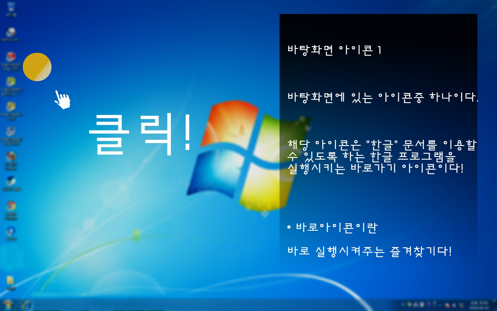

서비스 소개

제가 개발하고자 하는 서비스는 모두가
컴퓨터와 조금더 가까워지기 바라는 마음에서 시작하게 되었습니다.
주변에 켐퓨터와 마음의 거리가 멀~리 떨어져 있으신 분들을 보고,
아! 이분들을 위해서 주변에서 흔히 사용되는 윈도우에 대해서 설명해주는
서비스가 있다면, 윈도우에서 모두가 어려워하지 않고, 사용할 수 있을 것 같다!
라는 생각에 개발하게 되었습니다! 지금은 미숙한 저의 실력이기에
아직 완벽히 만들지는 못했지만! 위에 사진처럼 개발하고 있습니다!
열심히 해볼께요!!!! 화이팅!